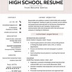
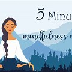

Growth Strategies for Academic Success
Here you'll find powerful tools to build habits, align your mind and spirit, and sharpen your study skills.
Study Techniques
- Pomodoro Technique: Study for 25 minutes, rest for 5, repeat. Helps focus and avoid burnout.
- Feynman Method: Teach what you learn in simple words to master it deeply.
- Mind Mapping: Visually organize ideas and see how concepts are connected.
Mental Habits
- Daily Affirmations: Rewire your mind for success by speaking life into your goals each morning.
- Gratitude Practice: Reflect daily on what you're thankful for to increase positivity and motivation.
- Visualization: Spend 5 minutes imagining yourself succeeding and feeling that joy.
Faith-Based Tips
- Morning Prayer: Start your day with divine alignment and clear intention.
- Scripture Journaling: Write insights from scripture and how they apply to your goals.
- Service: Uplift others — it boosts your own clarity and purpose.
Featured-Weather
Temperature: 50°F
Wind Speed: 5 mph
Wind Chill: